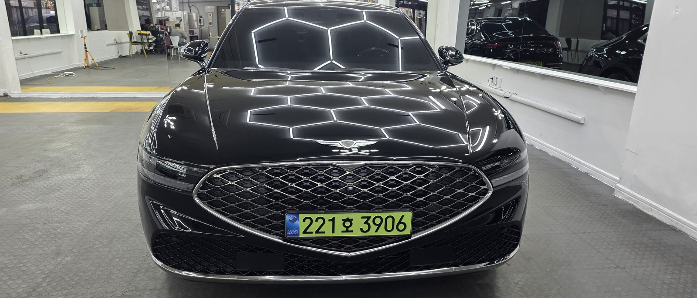
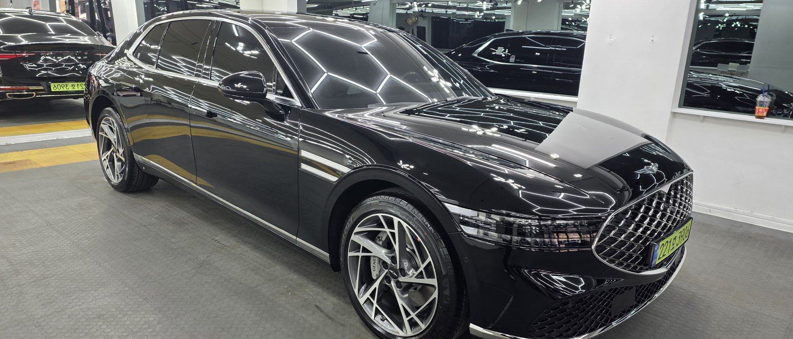
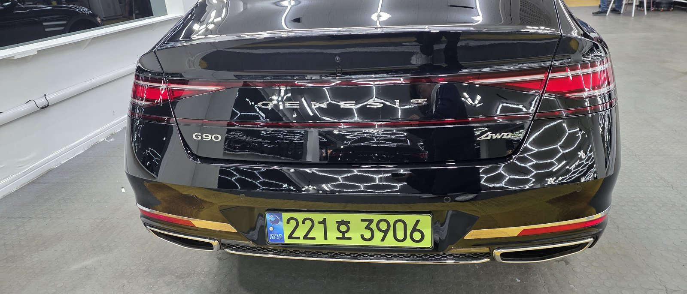
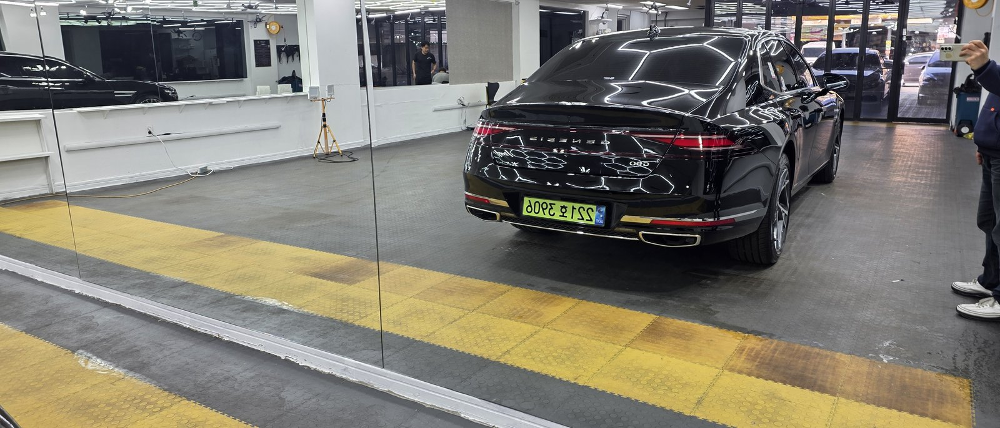
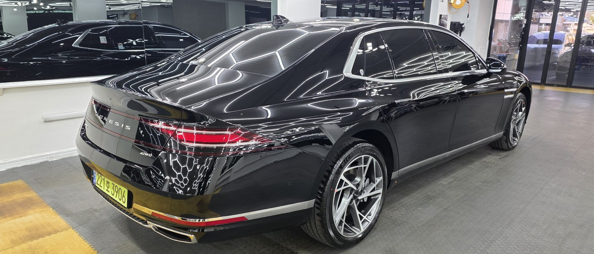

제네시스 G90 검정입니다. 아직 출고 전, 새 차입니다.
이 차도 출고 전에 F5 유리막코팅으로 진행했습니다.

플래그십 세단인데 왜 출고 전에 코팅을 하나
패널이 클수록 잔기스와 오염이 더 크게 눈에 띕니다.
G90처럼 긴 보닛과 넓은 도어 패널을 가진 차는 조명 하나만 받아도 표면 상태가 그대로 드러납니다. 그래서 운행·세차로 흠집이 쌓이기 전, 신차 상태 그대로일 때 코팅막을 입혀두는 겁니다.

검정 G90에 왜 F5인가
F5는 색감 깊이를 끌어올려 글로시함을 극대화하는 코팅입니다.
검정은 발색이 얼마나 깊어 보이느냐가 관건입니다. 여기에 F5를 올리면 젖은 듯한 윤기가 생겨, 같은 검정이라도 더 진하고 도톰하게 보입니다. 코팅제는 대표가 화학공학 전공으로 직접 개발·제조한 제품입니다.
기술자의 팁
매장 천장의 헥사곤 조명은 그냥 인테리어가 아닙니다. 반사되는 선이 매끈하게 이어지는지를 보고 도장면 요철을 확인하는 점검용 조명입니다. 사진 속 선이 곧게 이어지는 게 코팅 전후 상태를 그대로 보여주는 증거입니다.

후면에서도 확인되는 결과
뒷모습에서도 F5의 윤기는 그대로 이어집니다.
트렁크 리드의 GENESIS·G90 레터링 위로 조명 라인이 끊김 없이 반사되는 걸 볼 수 있습니다. 신차 상태의 도장을 그대로 지키면서, 그 위에 깊은 광택 한 겹을 더한 결과입니다.


자주 묻는 질문
Q. 플래그십 세단인데 왜 출고 전에 코팅을 하나요?
A. 도장면이 가장 깨끗할 때 올리는 코팅이 가장 오래갑니다. G90처럼 큰 패널일수록 운행·세차로 쌓이는 잔기스가 더 크게 표시가 납니다. 신차 상태 그대로일 때 코팅막을 입혀두면 처음 컨디션을 더 오래 지킵니다.
Q. 검정 G90에는 어떤 코팅이 좋나요?
A. 이 차는 F5로 진행했습니다. F5는 색감 깊이를 끌어올려 글로시함을 극대화합니다. 검정에 젖은 듯한 윤기를 더해, 같은 검정이라도 더 진하고 도톰하게 보입니다.
Q. 헥사곤 조명 아래서 사진을 찍는 이유가 뭔가요?
A. 육각형 조명은 도장면 위 반사선이 매끈하게 이어지는지 보여주는 점검용 조명입니다. 선이 끊기면 표면 요철이 있다는 뜻이라, 코팅 상태를 눈으로 바로 확인할 수 있습니다.
Q. 쉴드광택 위치와 예약은 어떻게 하나요?
A. 부산 남구 유엔로220 1F 쉴드광택입니다. 예약·상담은 010-3384-1850, 대표 최한중이 직접 상담하고 책임 시공합니다.
큰 차일수록 도장 상태가 더 크게 드러납니다. 가장 깨끗할 때 입혀두십시오.
제품을 직접 만드는 사람이 직접 시공합니다.
부산에서 신차코팅을 고민 중이시면 편하게 연락 주십시오.
어떤 차를 타냐보다 어떻게 타냐가 중요합니다~!
시공 중에는 전화를 받지 못할 때가 많습니다.
카카오톡으로 차종과 원하시는 시공을 남겨주시면 확인 후 답변드립니다.
쉴드광택 · 부산 남구 유엔로220 1F · 대표 최한중